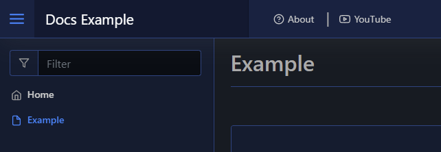
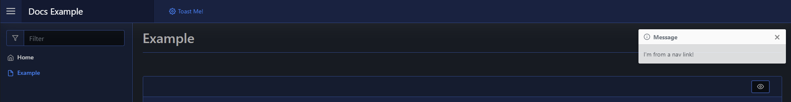
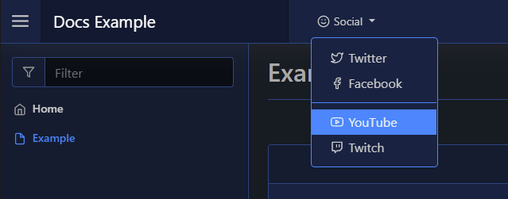

Navigation
Web pages generated by Pode.Web all have a navigation bar (navbar) at the top. By default this is empty, but you can add your own Links, Dropdowns and Dividers to this navbar.
You create the individual components of the navbar, and then set them using Set-PodeWebNavDefault. This will set the default components for the navbar on every page. Each page created via Add-PodeWebPage has a -Navigation parameter, where you can supply custom navbar components to show instead of the default.
Links
A link on the navbar is just some text that can either take a user to another page/website, or can run a custom scriptblock within Pode.Web. To create a new link you use New-PodeWebNavLink with a -Name.
You can add multiple links, and separate them with dividers using New-PodeWebNavDivider.
URL
The below example add a couple of simple links, and a divider. The first link takes the user to another page in Pode.Web, the other link takes the user to YouTube:
$navAbout = New-PodeWebNavLink -Name 'About' -Url '/pages/About' -Icon 'help-circle'
$navDiv = New-PodeWebNavDivider
$navYT = New-PodeWebNavLink -Name 'YouTube' -Url 'https://youtube.com' -Icon 'youtube'
Set-PodeWebNavDefault -Items $navAbout, $navDiv, $navYT
Which would look like below:

Dynamic
Whereas the next example will add a dynamic link that shows a toast message when clicked:
$navToast = New-PodeWebNavLink -Name 'Toast Me!' -Icon Settings -ScriptBlock {
Show-PodeWebToast -Message "I'm from a nav link!"
}
Set-PodeWebNavDefault -Items $navToast
Which would look like below:

Dropdowns
A dropdown can be created using New-PodeWebNavDropdown, and just takes a -Name and an array of -Items - which are just Links and Dividers. You can also nest another dropdown in -Items, but only one dropdown in another dropdown is supported, more do work but it gets flakey.
Links in dropdowns work as above, and can be normal URLs or Dynamic links.
For example, the following dropdown displays a list of social websites to the user:
$navDropdown = New-PodeWebNavDropdown -Name 'Social' -Icon 'smile' -Items @(
New-PodeWebNavLink -Name 'Twitter' -Url 'https://twitter.com' -Icon 'twitter'
New-PodeWebNavLink -Name 'Facebook' -Url 'https://facebook.com' -Icon 'facebook'
New-PodeWebNavDivider
New-PodeWebNavLink -Name 'YouTube' -Url 'https://youtube.com' -Icon 'youtube'
New-PodeWebNavLink -Name 'Twitch' -Url 'https://twitch.tv' -Icon 'twitch'
)
Set-PodeWebNavDefault -Items $navDropdown
Which would look like below:
